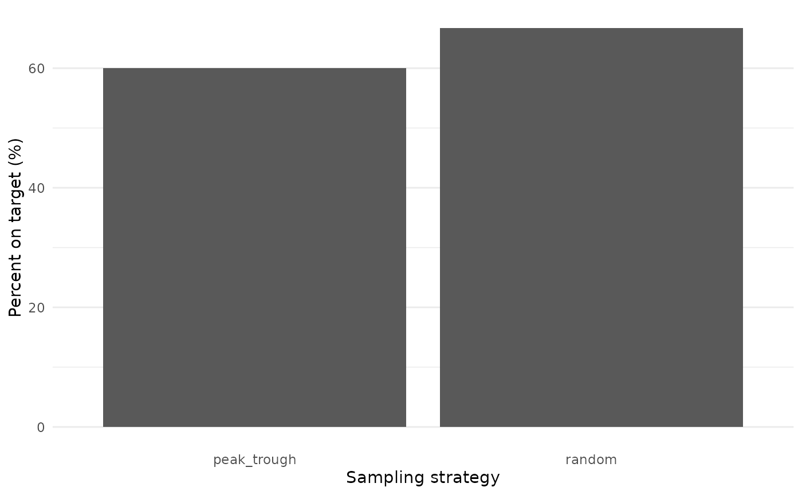
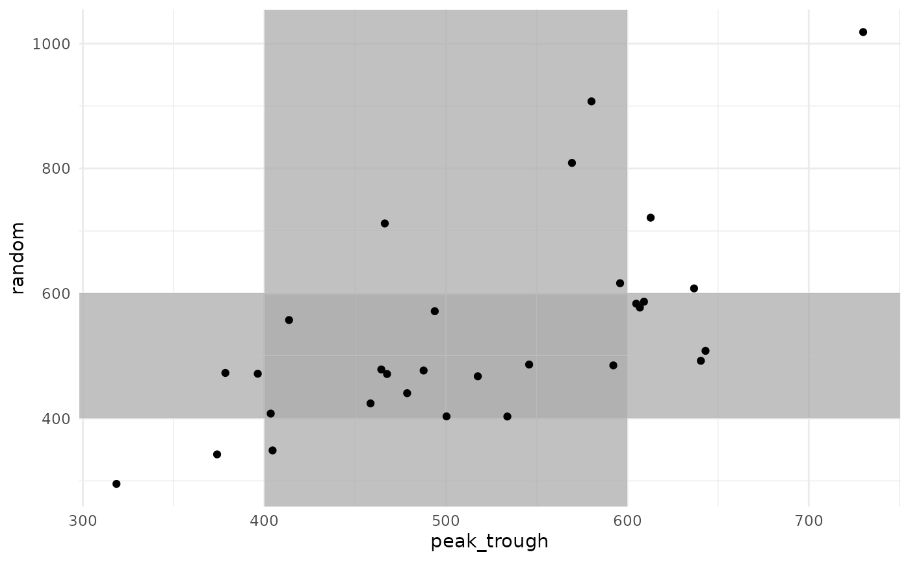

Effect of sample timing
sample_timing.RmdA hospital currently collects two samples for adjusting vancomycin doses: one at 1-hr post-dose and another at 9 hours post-dose. They want to compare the impact on target attainment (an area under the curve (AUC) of 400-600 mg*h/L) if they were to switch to collecting a single sample at 5 hours post-dose.
Here is how we could answer that problem using simulation!
library(mipdtrial)
library(dplyr) # for easier data manipulation
library(tidyr)
library(ggplot2) # for plotting our results1. Define trial design
This simulated trial will have two arms:
- Two samples, collected 1 and 9 hours after a dose
- One sample, collected 5 hours after a dose
In each case, we will collect the samples in the fourth dosing interval, and for simplicity, we will assume all patients are receiving vancomycin twice daily, infused over 2 hours.
# end_of_fourth_infusion <- (4-1) * 12 + 2 # first dose at t=0, infusion is 2 hrs
# tdm_times1 <- c(1, 9) + end_of_fourth_infusion
# tdm_times2 <- 5 + end_of_fourth_infusion
tdm_design1 <- create_sampling_design(
offset = c(1, 9),
at = c(4, 4),
anchor = "dose"
)
tdm_design2 <- create_sampling_design(
offset = 5,
at = 4,
anchor = "dose"
)We will adjust the fifth dose based on these levels, aiming for a daily AUC of 400-600 mg*h/L by day 6.
update_design <- create_regimen_update_design(
at = 5,
anchor = "dose",
dose_optimization_method = map_adjust_dose
)
target_design <- create_target_design(
targettype = "auc24",
targetmin = 400,
targetmax = 600,
at = 6,
anchor = "day"
)2. Create a set of digital patient covariates
For this example, we will randomly generate a set of weights and creatinine clearances (CRCLs) for our synthetic data set.
set.seed(15)
dat <- data.frame(
ID = 1:30,
weight = rnorm(30, 90, 25), # kg, normally distributed
crcl = exp(rnorm(30, log(6), log(1.6))) # L/hr, log-normally distributed
)We will use the Thomson (2009) model, which accepts additional clearance from hemodialysis as a covariate. Let’s set that to zero in our data set.
Other models might require fat-free mass or other calculated covariates. This would be a good time to do that sort of processing on your data set!
dat$CL_HEMO <- 0Here are the first few rows of our data set:
head(dat)
#> ID weight crcl CL_HEMO
#> 1 1 96.47057 4.827349 0
#> 2 2 135.77802 6.013269 0
#> 3 3 81.50954 11.863322 0
#> 4 4 112.42995 8.546496 0
#> 5 5 102.20041 9.448520 0
#> 6 6 58.61535 7.477850 03. Load model definitions
We need to define the model parameters and variability terms for our simulation. For this study, we will use the ones defined in the models.
#> Loading required package: pkvancothomson
#> Warning in library(package, lib.loc = lib.loc, character.only = TRUE,
#> logical.return = TRUE, : there is no package called 'pkvancothomson'
#> - Retrieving model definition ()...
#> - Package pkvancothomson not installed yet.
#> - Compiling model.
#> * Adding model definition to R package.
# Set up simulation model
if (!require(pkvancothomson)) {
PKPDsim::install_default_literature_model("pk_vanco_thomson")
library(pkvancothomson)
}
model <- pkvancothomson::model()
pop_parameters <- pkvancothomson::parameters()
omega <- pkvancothomson::omega_matrix()
ruv <- pkvancothomson::ruv()We also need to link the covariates in our data set to the covariates expected in the model.
# check which covariates are required for your model using
# `PKPDsim::get_model_covariates(model)`
# check which covariates are in your data set using `colnames(dat)`
cov_mapping <- c(
WT = "weight",
CRCL = "crcl",
CL_HEMO = "CL_HEMO"
)4. Initialize output metrics of interest
We want to compare AUC at the end of the treatment course according to each sample collection strategy. We will pre-populate a data frame rather than iteratively binding rows, since that is more performant.
results <- data.frame(
id = dat$ID,
peak_trough = NA_real_,
random = NA_real_
)5. Simulate a trial!
Patients will get a model-based dose (using population PK parameters), and then this dose will be adjusted based on the MAP Bayesian fit made using the collected samples.
Individual PK parameters will be randomly generated based on the interindividual variability described in the model, and residual variability will be added to each sample collected using the error model described in the model.
set.seed(15) # important for reproducibility
for (i in dat$ID) {
# get patient covariates
covs <- create_cov_object(
dat[dat$ID == i,],
mapping = cov_mapping
)
# find initial starting dose: define basic regimen, then upda
initial_reg <- model_based_starting_dose(
target_design = target_design,
sampling_design = tdm_design1,
n = 12,
interval = 12,
t_inf = 2,
dose_resolution = 250, # round to nearest 250 mg
grid = seq(250, 6000, by = 250),
grid_type = "dose",
# define model components
est_model = model,
parameters = pop_parameters,
covariates = covs,
auc_comp = attr(model, "size")
)
# randomly draw individual PK parameters
pars_true_i <- generate_iiv(
sim_model = model,
omega = omega,
parameters = pop_parameters
)
# Summary of both MIPD approaches
treatment_summary1 <- sample_and_adjust_by_dose(
regimen_update_design = update_design,
sampling_design = tdm_design1, # arm 1
target_design = target_design,
regimen = initial_reg,
covariates = covs,
pars_true_i = pars_true_i,
sim_model = model,
sim_ruv = ruv,
est_model = model,
parameters = pop_parameters,
omega = omega,
ruv = ruv
)
treatment_summary2 <- sample_and_adjust_by_dose(
regimen_update_design = update_design,
sampling_design = tdm_design2, # arm 1
target_design = target_design,
regimen = initial_reg,
covariates = covs,
pars_true_i = pars_true_i,
sim_model = model,
sim_ruv = ruv,
est_model = model,
parameters = pop_parameters,
omega = omega,
ruv = ruv
)
# get steady-state AUC at end of treatment course
results$peak_trough[results$id == i] <- calc_auc_from_regimen(
regimen = treatment_summary1$final_regimen,
parameters = pars_true_i, # true patient parameters
model = model,
target_design = target_design,
covariates = covs
)
results$random[results$id == i] <- calc_auc_from_regimen(
regimen = treatment_summary2$final_regimen,
parameters = pars_true_i, # true patient parameters
model = model,
target_design = target_design,
covariates = covs
)
}Here are the first few rows of our simulation results:
head(results)
#> id peak_trough random
#> 1 1 500.3640 403.2282
#> 2 2 606.9251 577.4495
#> 3 3 592.2950 484.8727
#> 4 4 404.5096 348.7749
#> 5 5 729.9797 1018.3722
#> 6 6 487.7377 476.63906. Analyze results
We are interested in AUC target attainment. How did target attainment compare between the two arms of the trial?
target_attainment <- results %>%
pivot_longer(
c(peak_trough, random),
names_to = "sampling_design",
values_to = "steady_state_auc"
) %>%
mutate(ontarget = is_on_target(steady_state_auc, target_design)) %>%
group_by(sampling_design) %>%
summarize(prop_on_target = 100 * mean(ontarget))
target_attainment %>%
ggplot() +
aes(x = sampling_design, y = prop_on_target) +
geom_bar(stat = "identity") +
theme_minimal() +
theme(
panel.grid.major.x = element_blank()
) +
labs(
x = "Sampling strategy",
y = "Percent on target (%)"
)
Target attainment was high and varied little between the two arms, providing evidence to support the move from collecting two samples to collecting a single sample per dosing interval.
Because we are simulating each sampling strategy in each patient, we can also look at how each patient responded to each sampling strategy.
results %>%
ggplot() +
aes(x = peak_trough, y = random) +
geom_rect(
aes(xmin = 400, xmax = 600, ymin = -Inf, ymax = Inf),
fill = "grey70",
alpha = 0.05
) +
geom_rect(
aes(ymin = 400, ymax = 600, xmin = -Inf, xmax = Inf),
fill = "grey70",
alpha = 0.05
) +
geom_point() +
theme_minimal()
There is a strong correlation in final AUC between the two sampling strategies. Some patients were under-exposed or over-exposed in both strategies, while others were on-target in one strategy but not in the other.